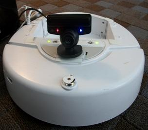

My research philosophy is to characterize software engineering problems and develop tools and techniques to solve these problems. My work lies in the intersection of empirical software engineering, human factors, and automation and development tools. Here is a featured selection of research projects:
Dissertation Research
Analyzing Existing Systems
 |
To determine if developer recommendation choice architectures can improve recommendations to software engineers, I first examined the GitHub suggested changes feature, a system that incorporates all of the developer recommendation choice architectures. This feature allows reviewers to make specific recommendations on lines of code to improve pull requests during reviews, and lets developers automatically apply, reject, or edit changes. To analyze suggested changes through the lens of my framework, I conducted two studies comparing different styles of automated tool recommendations and exploring its impact on developers and pull requests on GitHub. |
Developer Recommendation Choice Architectures
|
To improve the decision-making of developers, my work incorporates concepts from behavioral science. Nudge theory seeks to improve human behavior by influencing the environment surrounding decisions, or choice architecture [Thaler, 2008]. In this work, I introduce developer recommendation choice architectures, a framework for designing automated recommendations to nudge developers towards better behaviors and practices: 1) actionability, the ease with which developers can adopt target behaviors; 2) feedback, the clarity and relevance of the information; and 3) locality, the placement and timing of recommendations. My preliminary evaluation explores actionable recommendations. |
Effective Developer Recommendations
To develop tools and techniques for improving developer decision-making, I first explore what makes an effective recommendation. Research shows that peer interactions, or the process of discovering tools from colleagues during normal work activities, is the most effective mode of tool discovery [Murphy-Hill, 2011]. Additionally, I developed the naive telemarketer design, a baseline approach for automating developer recommendations with bots. My preliminary work investigates what makes each of these methods effective or ineffective for learning about new development tools. |
Other Graduate Research
Program Navigation
Flower (pronounced flow-er) is an Eclipse plugin that leverages powerful program analysis techniques while maintaining a minimalistic interface to assist developers in effectively navigating program flow. Our tool enables developers to simultaneously navigate control flow and data flow within the Eclipse Integrated Development Environment (IDE). Some of the features include clicking on any variable or parameter to automatically invoke the tool and highlight everywhere the variable is used and displaying links in the code as well as boxes directly above and below the editor to method calls and declarations where the selected variable is modified or referenced. |
Automated Program Repair
Computer science education faces a unique problem where enrollment in introductory courses is drastically increasing while the field's retention rate is decreasing. Programming assignments and grades play a major role students losing interest in the major. This project studies using concepts from automated program repair to improve CS education by providing valuable feedback and automatically grading assignments for beginner programmers. The results suggest our patch grading algorithm is effective for improving grades on introductory coding assignments. |
Undergraduate Research
Computer Science Education
|
This project focused on using the Alice 3D block-based programming language to integrate computer programming concepts and computational thinking into K-12 education, specifically middle school math. For this work, we organized Adventures in Alice Workshops for K-12 teachers interested in incorporating computational thinking and programming concepts into their courses, hosted an Alice Activity Day for students, created and mapped tutorials to standards for middle school students, and presented this work at a variety of venues for students and research presentations. This research was completed for the Duke University Computer Science Undergraduate Research Fellowship (CSURF) program with Dr. Susan Rodger. |
Robotics
|  | For this work, we examined ways to integrate robotics into society and improve the interaction between robots and humans. We explored using the Robot Operating System (ROS) to program iRobot Create robots and AR Drone Parrot Quadricpoters. Our final project consisted of designing and creating SwagBot, a delivery system to transport objects between users. This project was completed as part of the Computing Research Association Distributed Research Experience for Undergraduates (DREU) program Dr. Chad Jenkins and the Brown University Robotics group. |